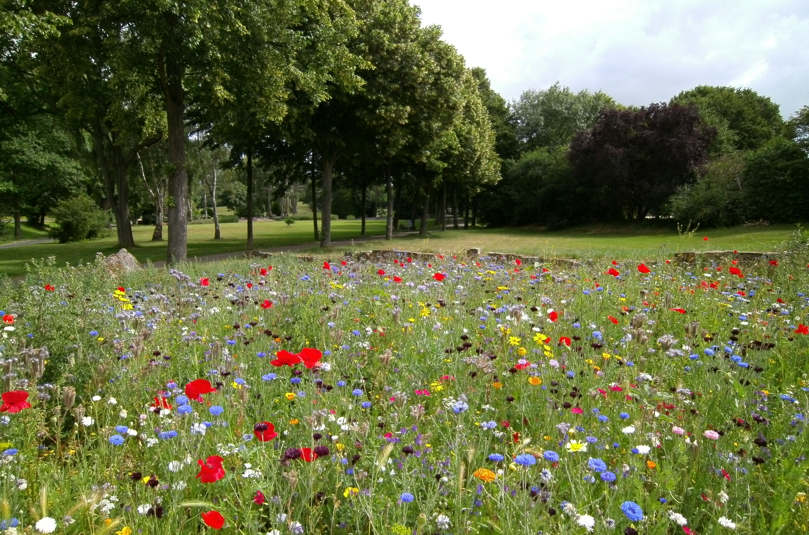

Todas las plantas que ofrecemos crecen y se siembran en nuestro campo. El mismo se encuentra cerca de la localidad de Zárate, en Buenos Aires, Argentina. Luego de que alcancen la altura suficiente para venderlos, son trasladados a nuestro vivero con venta al público, en C.A.B.A